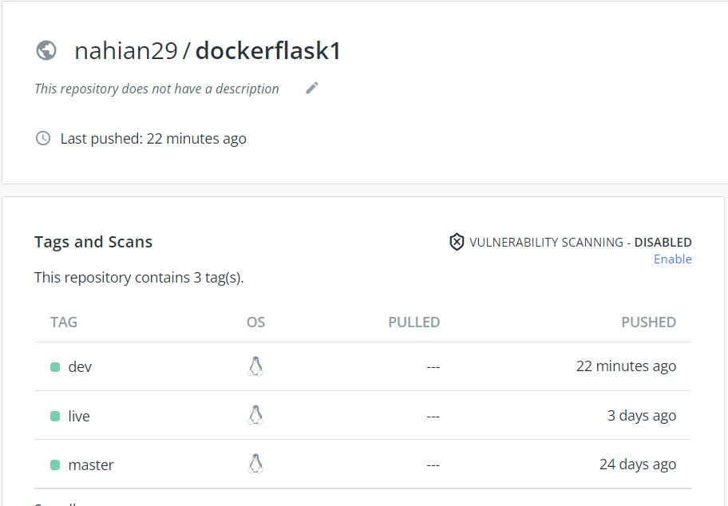

Docker Container: A container is a runnable instance of an image. You can create, start, stop, move, or delete a
container using the Docker API or CLI. You can connect a container to one or more networks, attach storage to it, or even
create a new image based on its current state. By default, a container is relatively well isolated from other containers
and its host machine. You can control how isolated a container’s network, storage, or other underlying subsystems are from
other containers or from the host machine. A container is defined by its image as well as any configuration options one
provide to it when you create or start it. When a container is removed, any changes to its state that are not stored in
persistent storage disappear.

Docker Hub: Docker Hub is a cloud-based repository in which Docker users and partners create, test, store and distribute container images. Through Docker Hub, a user can access public, open source image repositories, as well as use a space to create their own private repositories, automated build functions, webhooks and work groups. It is a cloud-hosted version of Docker Registry. A Docker user can opt for Docker Registry, which is a stateless, open source and scalable server-side application, if they prefer to maintain the storage and distribution of Docker images instead of relying on Docker's service.
A user pulls an image from Docker Hub with the docker pull command. Container images stored in repositories on Docker Hub feature tags, which categorize the images under relevant headings, such as the base OS version, container function and whether it is the most recent update of the image, with the designation latest.Additionally, a user may access images in other registries by specifying the designated registry path -- similar to a URL, but lacking a protocol specifier -- in the docker pull command. A user may also pull multiple images from a repository by adding -a or --all-tags to the docker pull command.
Pycharm and Docker: Using Docker as a way to manage python dependencies can work well, and is a relatively new practice that is probably becoming more common. In this case, if one do not want to run PyCharm from inside the Docker container, instead, one could develop in PyCharm on their host machine, and use the container simply to run the python script. The best way to illustrate how this works is probably with an example. For simplicity, creating a new folder, cd to it, and creating a simple python script and running it in the docker command line. That command will mount the current directory into the container. When this is done within a project, that should be its project directory.